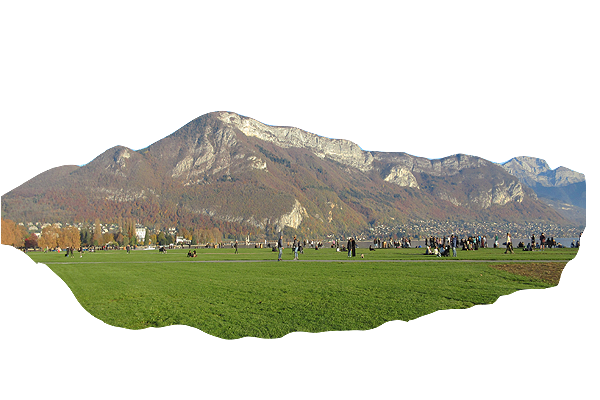
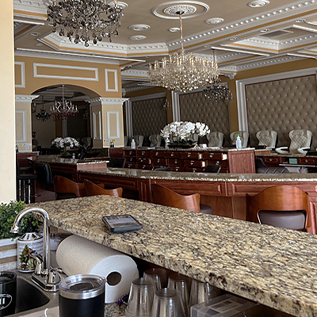
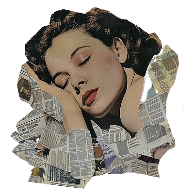

WHEN CAN I TAKE A PAUSE DU TRAVAIL??
Labor policy and culture are famously different in the US and France. For example:
- France: 35 hour work week.
- US: 40 hour work week.
- France: 44 hour maximum.
- US: NO set maximum.
- France: Two-month notice before firing an employee.
- US: NO required advanced notice.
Labor laws are the laws that create the boundaries on working hours, but they also determine several other laws. These may include wages, workplace safety, benefits, unions, leave, etc. Often, you can tell a lot about a culture by the way their labor laws are structured. This page explores this concept by comparing the labor laws of France and the United States.

In France, there is a long-lasting culture of protest, especially for working conditions. With extra time for leisure, including months throughout the year where most people stop working, the French culture is able to thrive. Skiing in the Alps in December and swimming in the French Riviera in August are common activities. May 1st is a national holiday in France, called Fête du Travail, or Labor Day. It is a day without work, to celebrate the Labor movement, and the achievements of workers. The French are not just lazy, they work very hard throughout the year to be able to enjoy this time off. Additionally, it may appear that Americans make higher salaries, but while the numbers may showcase that, they fail to acknowledge that taxes are taken from salaries in France, and go towards public services such as state medical care. Ultimately, the French often pay less than Americans towards necessary expenses, despite the lower salaries.
French Labor Laws Summary Fête du Travail History Compare Cost of Living

In the US, there is a culture of working hard, and working long hours. With no legally set maximum working hours, many people work 50-60 hours a week. The US is the only developed nation with a system of at-will employment. This means that an employer can fire an employee for any reason, or no reason at all. Rather than a system of labor laws that protect employees, like the one the French protested for, the American system primarily protects employers. On one hand, this system allows for more qualified employees to be hired as old employees are fired. On the other hand, employees are often in fear of losing their jobs, and therefore are unlikely to protest for better working conditions.
At-Will Employment Explained